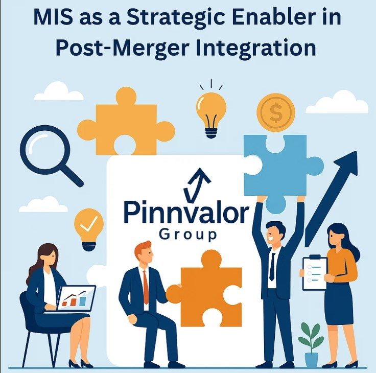

MIS as a Strategic Enabler in Post-Merger Integration
Mergers and acquisitions (M&A) are often seen as a fast-track strategy for business growth, market expansion, and competitive advantage. Yet, studies reveal that a significant portion of mergers fail to deliver their expected value—primarily due to poor integration processes. One of the most underestimated, yet powerful tools in ensuring seamless integration is the Management Information System (MIS).
In today’s data-driven business environment, MIS goes beyond simple reporting. It acts as the backbone for decision-making, performance monitoring, and synergy realization during post-merger integration (PMI). Let’s explore how MIS functions as a strategic enabler in this critical phase.
Can a robust MIS be the difference between a failed merger and a seamless integration success?
A strong MIS is not just an operational tool—it is a strategic enabler. It bridges the gap between uncertainty and clarity, ensuring mergers deliver the value they promise.
1. MIS as a Unifying Information Platform
After a merger, two organizations often come with different legacy systems, reporting structures, and data formats. This fragmented environment can create confusion, redundancies, and inefficiencies. MIS provides a unifying platform that consolidates information, standardizes data, and ensures all stakeholders work with a single source of truth.
- Aligns reporting structures
- Reduces duplication of data
- Provides a real-time view of performance across the merged entity
2. Facilitating Strategic Decision-Making
Top management relies on accurate, timely information to make crucial post-merger decisions such as restructuring, cost-cutting, and resource allocation. MIS enables:
- Scenario analysis for assessing different strategic options
- Financial and operational dashboards to track integration progress
- Risk identification and mitigation through data-driven insights
With robust MIS, leaders can act swiftly and confidently in aligning the merged organization with its strategic vision.
3. Enhancing Operational Synergies
One of the primary goals of any merger is to unlock synergies—whether through cost savings, cross-selling opportunities, or operational efficiencies. MIS plays a pivotal role here by:
- Mapping overlapping processes and resources
- Highlighting performance gaps between legacy entities
- Providing insights for process harmonization
This structured approach enables the new entity to capitalize on economies of scale and shared capabilities.
4. Driving Cultural and Organizational Integration
Integration is not only about processes and numbers; it is also about people and culture. MIS helps build transparency and trust across the merged workforce by:
- Creating a common performance measurement system
- Ensuring fairness in resource allocation and target setting
- Providing clear communication channels backed by data
This reduces resistance, aligns employees toward shared goals, and fosters a unified organizational culture.
5. Strengthening Compliance and Governance
Post-merger, the new entity must comply with regulatory requirements, tax laws, and reporting standards across jurisdictions. MIS supports compliance by:
- Automating audit trails and reporting processes
- Ensuring data integrity and security
- Enabling proactive monitoring of legal and financial obligations
This reduces the risk of penalties, reputational damage, or integration setbacks.
6. Enabling Continuous Monitoring and Feedback
Integration is not a one-time event but an ongoing journey. MIS enables continuous monitoring of key performance indicators (KPIs) to track whether the merger is delivering the intended value. With MIS-generated feedback loops, management can:
- Identify integration bottlenecks early
- Adapt strategies to market dynamics
- Measure success against pre-merger objectives
Conclusion
Post-merger integration is a complex process, often marked by uncertainty and challenges. However, organizations that harness the power of MIS gain a strategic advantage. By providing unified data, enabling smarter decisions, facilitating synergy realization, and ensuring compliance, MIS transforms the integration phase into a structured, transparent, and value-creating journey.
In essence, MIS is not just an operational tool but a strategic enabler—one that bridges the gap between merger ambitions and realized outcomes. Companies that recognize this role are more likely to turn their M&A deals into true success stories.